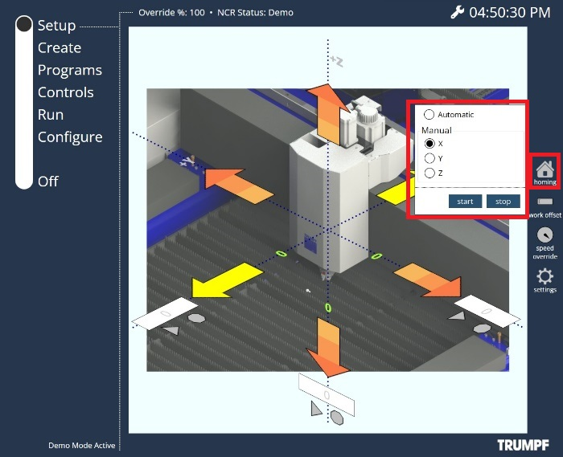

机床操作 通过使用触摸屏，您可以通过选项操作机床： 点动 可以在此页面上横移轴。X、Y和Z轴的当前位置 也可以在此处查看。 以下横移类型可用： 模态横移 增量横移 目标点横移 模态行程 鼠标向下移动超过300毫秒将启动模态运动，直到用户抬起手指/鼠标（长按）。根据用户点击箭头的位置， 机床将以不同的速度移动。模态行驶的速度可以 在 设置 中配置。 步进行程 点击（鼠标向下后立即向上，在300毫秒内）将分步移动。根据用户单击箭头的位置，轴将移动 短步、中步或大步。可以在 设置 中配置步长。 目标点行程 用户可以在输入字段中指定所选轴的目标点。 按 启动 键启动运动。轴的移动可以 随时用 停止 键停止。 速度倍率 用户可以使用 倍率 + 和 倍率 - 来影响 轴移动的速度（百分比）。 倍率 +: 增加配置/设置的轴或路径速度的倍率百分比。10%以上，数值以10%为增量变化，10%以下则以1%的增量变化。 倍率 -: 降低配置/设置的轴或路径速度的倍率百分比。10 ％以上，该值以10 ％的递减量变化，10 ％以下则以1%的递减量变化。用户还可以使用滑块增加或 降低速度。 归位 轴调基准可以通过两种方式完成。 自动： 如果激活此功能，则通过按下启动键初始化自动参考点横移。参考点横移 可以随时通过按停止键取消。 手动： 如果选择此功能，则可以初始化单个轴的手动参考点横移。选择所需的轴，然后按启动键 以初始化横移。参考点横移 可以随时通过按停止键取消。  设置 用户可以配置步长（用于步进行程）和速度（用于模态 行程）用于 设置 中箭头上的特定区域。